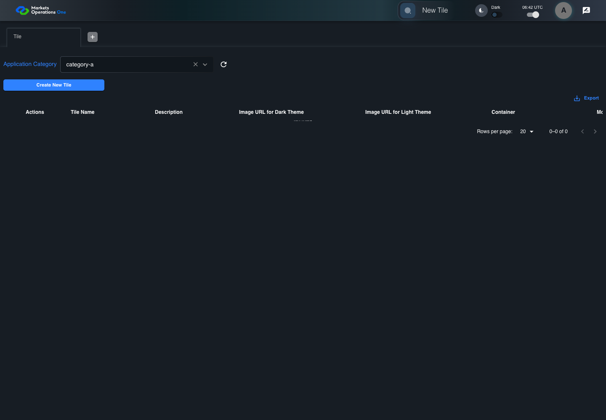
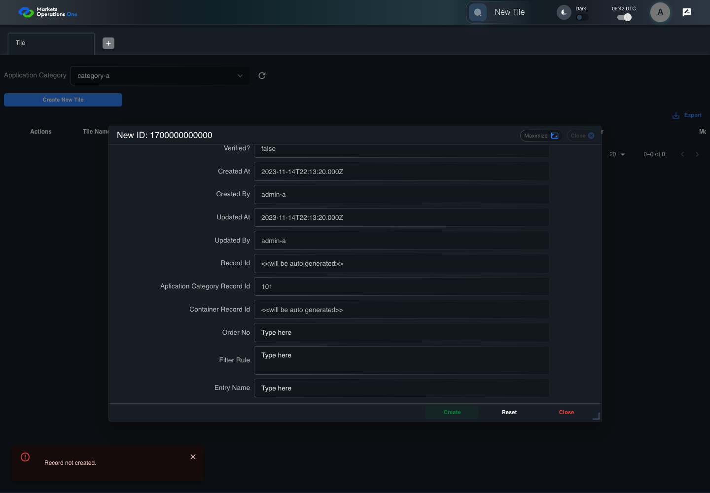

BFF-ADM-038 current BFF administration through actual UI
PASS · application/run-072/bff-adm-038-current-bff-administration-through-actual-ui-42eeff3b32d9-attempt-1 · ACTUAL_APPLICATION_LOCAL_SERVICES
Actual current React and exact-current BFF admin controllers/services/JPA with actual migration DDL in disposable PostgreSQL. Controlled OUD/EMS2 identities and local Spring bootstrap. Fixture SQL seeds/mutates isolated records; service errors are actual database errors. Undefined agreed messages remain unresolved acceptance.
2026-10-22T06:42:36.620Z to 2026-10-22T06:42:44.577Z
Assertions and result · Artifact manifest · Exact run inputs and source hashes
Result SHA-256:f998a47c497a1319a9852c1ac09aefb1978913cb1c140d51163d0ea0a717d066Machine observations
- actual-identity-projection.json
2ea2e89518bbe4a5c32ea22780bafbb238de062ef47921a17925ab97b96b034c - actual-migration-schema.json
ffdab465812bf672de7c104c56f1a33f57aa768bb5d11e60ff0e540483f6e7e9 - baseline-inputs.json
c77d2228fea158f21844dbe95d5b3b2e089a0cbfe8f856557023fbaec1dc6d73 - bff-boundary.json
d6b8a22765057d211b69cfd9c5e5a42ed61933402baa3668b9cdd3be2fe91ed0 - committed-ui-submission-comparisons.json
f9794d0e261f88f5d42490bfcb739452f58978525bf87363a82a0a0ab4baf647 - creation-clock.json
6031139bc94ea3935e93ab6767ff0f3139aad43bead4650f96d383822c64ce81 - empty-filter-rule-representation.json
d93ba935842ab0df0aaec47e7870c99e3707faa81feb49ec2e26b42ba2b70c1a - fixture-step-10.json
d1d96a0f26f62bf087cd8abf489d0035cd86bf92947fabcf35953e78cb26e9f3 - fixture-step-11.json
1df0b59f14b9f2a971abe85d3923a7a7117ec43b5a1e6b6cd88bffe0f03532e2 - fixture-step-6.json
9054cc986beca62b10ce631024fa94b39bdcbe32c2a04ca3b83e9fe4f8d066f0 - fixture-step-7.json
d90a939ac291655d1a038fdc837381c7250ae2b34686221253dd59543731710c - fixture-step-8.json
e4f40c2c7c57faf9da49b20344c68ae6f1ca3eaa79d7d18bc432e930ae0fdf47 - fixture-step-9.json
d9176933e5b88a2b6a3ac27f25ec9737df34233d6ea131d00d0bec7f93b110d1 - initial-persisted-records.json
c8faa1868e2e6bc35b2fa92dfa35fb00304576f1897e05c5009baee397e7a2bf - persisted-after-submit.json
46502a40913843d5b3bb05a885f529054ed36d2a707506593a910d6397249571 - reference-snapshot-3.json
ff8398b744fcb12324d3a47fd276d81c9024ec915817a2ea9517c87307e9d450 - reference-snapshot-4.json
8304340b51532848440460ee1f88ca6b427dc294e31ad1dcff673955dc06bc05 - ui-origin-bff-requests.json
770903dbf537462d2772032d461e056533bf26d1155b0b865838265c817c0620
Screenshot capture: CAPTURED. Named frames: 25.
Step screenshot evidence: COMPLETE. 24/24 canonical steps have execution screenshots.
Canonical step timeline
Given Admin A uses subject "admin-a" with role "FMO_ADMIN" in an isolated authenticated browser
Execution: PASSED.
1. step-01 Visible state after step 1: Given Admin A uses subject "admin-a" with role "FMO_ADMIN" in an isolated authenticated browser
2026-10-22T06:42:39.160Z · 1440×1000
Step: /Users/lushevol/code/github/ratan-release-impact/workbench/tasks/ui-test-coverage-20261022/test-cases.md:16278
SHA-256:6ea79714d57b6f05b4cb6b6c68ded1d1ece0cde7798d15719a901561b7526d20And the controlled Tile fixture records the initial grid rows and persisted values
Execution: PASSED.
2. step-02 Visible state after step 2: And the controlled Tile fixture records the initial grid rows and persisted values
2026-10-22T06:42:39.302Z · 1440×1000
Step: /Users/lushevol/code/github/ratan-release-impact/workbench/tasks/ui-test-coverage-20261022/test-cases.md:16279
SHA-256:37b17abe8bc6b507b32276f4d0153d38c71acee765fbaf2f0d67da4b490e58f3And Category 101 has label "category-a" and Import Map 201 has Module Name "container-a"
Execution: PASSED.
3. step-03 Visible state after step 3: And Category 101 has label "category-a" and Import Map 201 has Module Name "container-a"
2026-10-22T06:42:39.352Z · 1440×1000
Step: /Users/lushevol/code/github/ratan-release-impact/workbench/tasks/ui-test-coverage-20261022/test-cases.md:16280
SHA-256:46a8223394b10f887f5999217ffe413af0677f6e2d752ff78daf15493346d7b7And both references belong to "FMO_ADMIN" and the Tile page category filter value is Category 101
Execution: PASSED.
4. step-04 Visible state after step 4: And both references belong to "FMO_ADMIN" and the Tile page category filter value is Category 101
2026-10-22T06:42:39.419Z · 1440×1000
Step: /Users/lushevol/code/github/ratan-release-impact/workbench/tasks/ui-test-coverage-20261022/test-cases.md:16281
SHA-256:736872e40efb46f331f6696929dc757dc582c6fe9c1a5e805fa3499890e07ac2And the controlled creation clock returns 1700000000000 milliseconds
Execution: PASSED.
5. step-05 Visible state after step 5: And the controlled creation clock returns 1700000000000 milliseconds
2026-10-22T06:42:39.469Z · 1440×1000
Step: /Users/lushevol/code/github/ratan-release-impact/workbench/tasks/ui-test-coverage-20261022/test-cases.md:16282
SHA-256:5e1466f5f8eeb7cae56b67e39d2d5acf76b3e7151d493ada9139daaf6999d999And the baseline fixture data defines "Tile Name" as "tile-038"
Execution: PASSED.
6. step-06 Visible state after step 6: And the baseline fixture data defines "Tile Name" as "tile-038"
2026-10-22T06:42:39.520Z · 1440×1000
Step: /Users/lushevol/code/github/ratan-release-impact/workbench/tasks/ui-test-coverage-20261022/test-cases.md:16283
SHA-256:2f0a6b2d8811df22197b0a2aa705440c32653880bebb717f4e59c63fc896447bAnd the baseline fixture data defines "Module Path" as "/fixture"
Execution: PASSED.
7. step-07 Visible state after step 7: And the baseline fixture data defines "Module Path" as "/fixture"
2026-10-22T06:42:39.568Z · 1440×1000
Step: /Users/lushevol/code/github/ratan-release-impact/workbench/tasks/ui-test-coverage-20261022/test-cases.md:16284
SHA-256:54f716709643bcd647269010e86af7f7d30c69e95b853865dde43956b8748496And the baseline fixture data defines "Tile Path" as "/case-038"
Execution: PASSED.
8. step-08 Visible state after step 8: And the baseline fixture data defines "Tile Path" as "/case-038"
2026-10-22T06:42:39.616Z · 1440×1000
Step: /Users/lushevol/code/github/ratan-release-impact/workbench/tasks/ui-test-coverage-20261022/test-cases.md:16285
SHA-256:d5309d25a9fa00bc0da688d94f01b5aa15518683a749d4c42c7afbbde647931eAnd the baseline fixture data defines "Role Entities" as "E-TRADE"
Execution: PASSED.
9. step-09 Visible state after step 9: And the baseline fixture data defines "Role Entities" as "E-TRADE"
2026-10-22T06:42:39.674Z · 1440×1000
Step: /Users/lushevol/code/github/ratan-release-impact/workbench/tasks/ui-test-coverage-20261022/test-cases.md:16286
SHA-256:823e8f7979e9c9f29cc108111224e2824759a6fe04fe40d721e0b83cd55d0fc1And the baseline fixture data defines "Filter Rule" as ""
Execution: PASSED.
10. step-10 Visible state after step 10: And the baseline fixture data defines "Filter Rule" as ""
2026-10-22T06:42:39.753Z · 1440×1000
Step: /Users/lushevol/code/github/ratan-release-impact/workbench/tasks/ui-test-coverage-20261022/test-cases.md:16287
SHA-256:fb9a3d483f1732b91196b7341a4e5234e582d9e940047d31be99d1a956776a28And the baseline Tile references use "Aplication Category" "category-a" and "Container" "container-a"
Execution: PASSED.
11. step-11 Visible state after step 11: And the baseline Tile references use "Aplication Category" "category-a" and "Container" "container-a"
2026-10-22T06:42:39.850Z · 1440×1000
Step: /Users/lushevol/code/github/ratan-release-impact/workbench/tasks/ui-test-coverage-20261022/test-cases.md:16288
SHA-256:295442a69f835cd49c9da00bb4ef8cef11f672b8f2d08c9d02752c16f8c13c25And the prepared database uses the inspected migration DDL and reports its applied schema revision
Execution: PASSED.
12. step-12 Visible state after step 12: And the prepared database uses the inspected migration DDL and reports its applied schema revision
2026-10-22T06:42:39.977Z · 1440×1000
Step: /Users/lushevol/code/github/ratan-release-impact/workbench/tasks/ui-test-coverage-20261022/test-cases.md:16289
SHA-256:c1fcac03fb6ed4de53f41cfe2f4e91496f392048684ac5a78e8ec51230aa0e50When Admin A clicks the button labeled "Create New Tile" on the Tile administration page
Execution: PASSED.13. step-13 Visible state after step 13: When Admin A clicks the button labeled "Create New Tile" on the Tile administration page
2026-10-22T06:42:40.355Z · 1440×1000
Step: /Users/lushevol/code/github/ratan-release-impact/workbench/tasks/ui-test-coverage-20261022/test-cases.md:16290
SHA-256:297e0fa181209732ae7ecf1b86fc0f4f9e800f7a9411e33634a09e947140b270Then the dialog titled "new ID: 1700000000000" is visible on the Tile administration page
Execution: PASSED.
14. step-14 Visible state after step 14: Then the dialog titled "new ID: 1700000000000" is visible on the Tile administration page
2026-10-22T06:42:40.700Z · 1440×1000
Step: /Users/lushevol/code/github/ratan-release-impact/workbench/tasks/ui-test-coverage-20261022/test-cases.md:16291
SHA-256:529a2fde072a88026ea312df8e3396db6e89cc7b779007ad02f6b27201e816a7When Admin A clicks the combobox labeled "Container" in dialog "new ID: 1700000000000"
Execution: PASSED.
15. step-15 Visible state after step 15: When Admin A clicks the combobox labeled "Container" in dialog "new ID: 1700000000000"
2026-10-22T06:42:41.059Z · 1440×1000
Step: /Users/lushevol/code/github/ratan-release-impact/workbench/tasks/ui-test-coverage-20261022/test-cases.md:16292
SHA-256:3c82267d7989dbccb5869dcd937bb0f4747a5e5027a84e6dd5020d54387372e1And Admin A clicks the option labeled "container-a" in the expanded "Container" listbox for dialog "new ID: 1700000000000"
Execution: PASSED.
16. step-16 Visible state after step 16: And Admin A clicks the option labeled "container-a" in the expanded "Container" listbox for dialog "new ID: 1700000000000"
2026-10-22T06:42:41.511Z · 1440×1000
Step: /Users/lushevol/code/github/ratan-release-impact/workbench/tasks/ui-test-coverage-20261022/test-cases.md:16293
SHA-256:9a3a642c873d5ed65022c99bc59ff83ed94a8f804c95566d3744d922250d52ebAnd Admin A fills the textbox labeled "Tile Name" with exactly 256 ASCII "a" characters in dialog "new ID: 1700000000000"
Execution: PASSED.17. step-17 Visible state after step 17: And Admin A fills the textbox labeled "Tile Name" with exactly 256 ASCII "a" characters in dialog "new ID: 1700000000000"
2026-10-22T06:42:41.940Z · 1440×1000
Step: /Users/lushevol/code/github/ratan-release-impact/workbench/tasks/ui-test-coverage-20261022/test-cases.md:16294
SHA-256:46fd10d9a881d1186848ed32cea676017d2624a2214140f639f74f4dee3cc7f0And Admin A fills the textbox labeled "Module Path" with "/fixture" in dialog "new ID: 1700000000000"
Execution: PASSED.
18. step-18 Visible state after step 18: And Admin A fills the textbox labeled "Module Path" with "/fixture" in dialog "new ID: 1700000000000"
2026-10-22T06:42:42.348Z · 1440×1000
Step: /Users/lushevol/code/github/ratan-release-impact/workbench/tasks/ui-test-coverage-20261022/test-cases.md:16295
SHA-256:53fa6af088db0d016fba249cdfcad4ecb06137e396ef80097a1742f4d19dee05And Admin A fills the textbox labeled "Tile Path" with "/case-038" in dialog "new ID: 1700000000000"
Execution: PASSED.19. step-19 Visible state after step 19: And Admin A fills the textbox labeled "Tile Path" with "/case-038" in dialog "new ID: 1700000000000"
2026-10-22T06:42:42.777Z · 1440×1000
Step: /Users/lushevol/code/github/ratan-release-impact/workbench/tasks/ui-test-coverage-20261022/test-cases.md:16296
SHA-256:8c265e63386c625367c599e97afb346537d382f0f5ba6e6d8edb5728b8036247And Admin A fills the textarea labeled "Role Entities" with "E-TRADE" in dialog "new ID: 1700000000000"
Execution: PASSED.20. step-20 Visible state after step 20: And Admin A fills the textarea labeled "Role Entities" with "E-TRADE" in dialog "new ID: 1700000000000"
2026-10-22T06:42:43.207Z · 1440×1000
Step: /Users/lushevol/code/github/ratan-release-impact/workbench/tasks/ui-test-coverage-20261022/test-cases.md:16297
SHA-256:c33daa946edb9b8e8569498d16818d652c6e2d9ee501a19bb4a641f0614b9ab1And Admin A fills the textarea labeled "Filter Rule" with "" in dialog "new ID: 1700000000000"
Execution: PASSED.
21. step-21 Visible state after step 21: And Admin A fills the textarea labeled "Filter Rule" with "" in dialog "new ID: 1700000000000"
2026-10-22T06:42:43.636Z · 1440×1000
Step: /Users/lushevol/code/github/ratan-release-impact/workbench/tasks/ui-test-coverage-20261022/test-cases.md:16298
SHA-256:8f07477105180ecf048ac1ec197322edfccc8e9bd703a226f6e7cd1216ca3b3bAnd Admin A clicks the button labeled "Create" in dialog "new ID: 1700000000000"
Execution: PASSED.22. step-22 Visible state after step 22: And Admin A clicks the button labeled "Create" in dialog "new ID: 1700000000000"
2026-10-22T06:42:43.902Z · 1440×1000
Step: /Users/lushevol/code/github/ratan-release-impact/workbench/tasks/ui-test-coverage-20261022/test-cases.md:16299
SHA-256:9072cd1dca33cc6f8a893d351aa696c409be52ebb949df3bf32d60d614f418b7Then the Tile data grid with column "Record Id" row identifiers and loaded field values equal the initial grid snapshot on the Tile administration page
Execution: PASSED.23. step-23 Visible state after step 23: Then the Tile data grid with column "Record Id" row identifiers and loaded field values equal the initial grid snapshot on the Tile administration page
2026-10-22T06:42:44.034Z · 1440×1000
Step: /Users/lushevol/code/github/ratan-release-impact/workbench/tasks/ui-test-coverage-20261022/test-cases.md:16300
SHA-256:c797e4d37c7e79e805a04a24a66b7ff193e77fd0f5bb729c06afbf5e86b559c7And the alert with severity "error" in the portal snackbar contains the exact text "Record not created."
Execution: PASSED.
24. step-24 Visible state after step 24: And the alert with severity "error" in the portal snackbar contains the exact text "Record not created."
2026-10-22T06:42:44.083Z · 1440×1000
Step: /Users/lushevol/code/github/ratan-release-impact/workbench/tasks/ui-test-coverage-20261022/test-cases.md:16301
SHA-256:76398783ae372b2c3507b6f5fc9fdf14c4c9c2a06b29007e22fd164564ac018a
Additional named frames
Screenshots establish visible state only. Assertions and traces support functional claims.